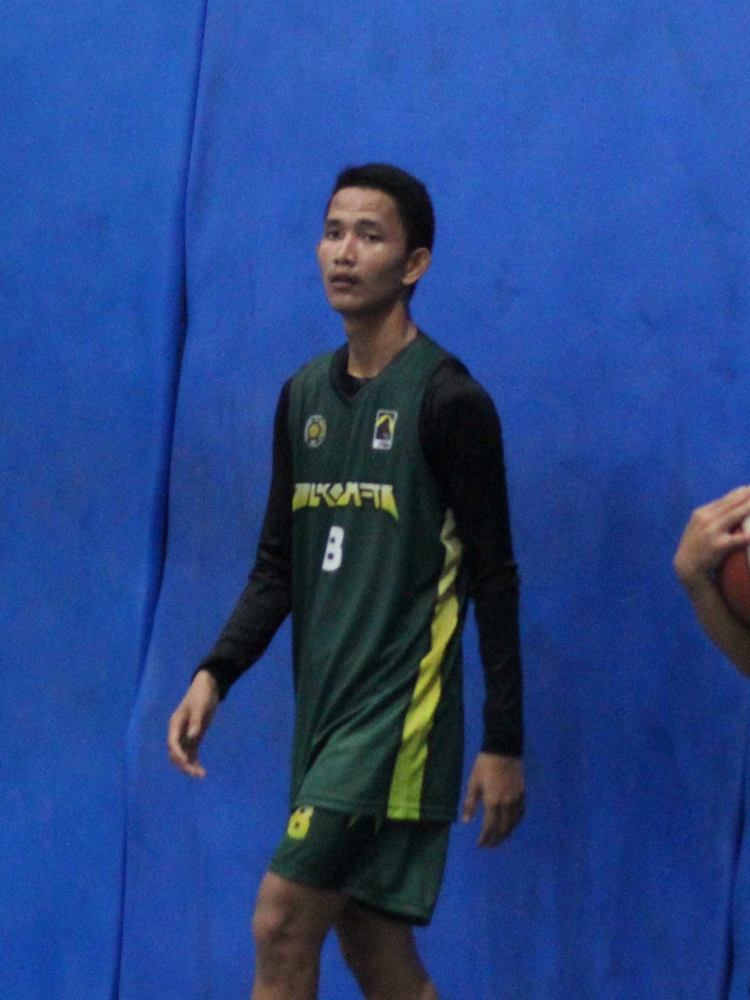

Portofolio Mahasiswa
Halo, Saya
Halo, Saya
Frans Eikel Martogi Simanullang
Mahasiswa S1 Ilmu Komputer Universitas Sumatera Utara yang berfokus pada pengembangan perangkat lunak, analisis data, dan memiliki ketertarikan tinggi pada dunia keamanan siber.
Lihat Proyek Saya
Pasfoto 3x4
Hobi Saya
Bermain Basket
Hobi utama yang paling sering saya lakukan dan paling saya sukai.
Memancing Ikan
Memancing bersama ayah di kolam pemancingan.
Programming
Memprogram web, aplikasi, dan eksplorasi koding.
Menonton Film
Genre favorit: Romance Comedy (Rom-Com).
Target Belajar Perkuliahan
- Menguasai keseluruhan syntax dan konsep logika pemrograman pada bahasa C++.
- Mempelajari bahasa pemrograman Python secara menyeluruh.
- Mendalami bidang Data Analysis menggunakan bahasa SQL.
- Menggali dan terjun lebih dalam ke dunia Cyber Security.
- Memanfaatkan hasil pembelajaran perkuliahan sebagai portofolio untuk melamar pekerjaan di dunia IT.
Website Favorit
Kemampuan
Bahasa pemrograman yang telah saya pelajari:
C++
C
Pascal
Python
SQL
CSS
JavaScript
Proyek
Beberapa proyek yang telah selesai dikerjakan:
Sistem Kasir Cellphone
Program sistem kasir untuk pencatatan dan manajemen transaksi toko seluler.
Repository GitHubPendeteksi Password
Sistem validasi dan penganalisis tingkat keamanan kata sandi (lemah / kuat).
Repository GitHubKontak Saya
Berikut adalah saluran kontak yang dapat dihubungi: